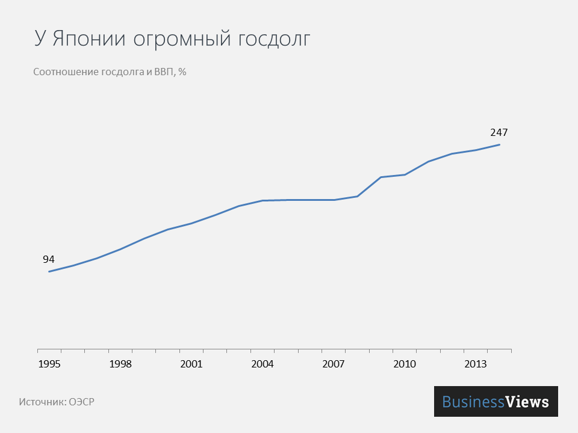
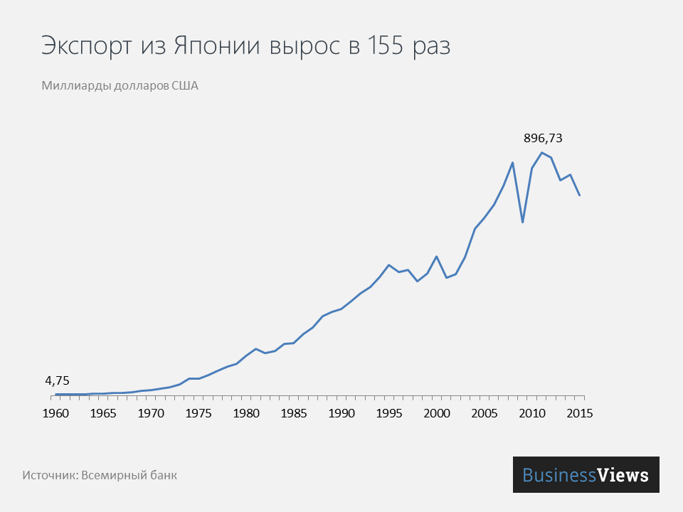

Политическая экономия: два слова, которые должны быть разведены по причине полной несовместимости.
Экономика
Подъем экономики Японии случился 30 лет назад: в общемировом индексе доля акций японских компаний составляла 44%. В десятке самых крупных банков мира семь были японскими, а из 271 миллиардеров по всему миру 40 были японцами. Впоследствии страна на своем опыте узнала, что ускоренное развитие, агрессивный экспорт и перепроизводство могут разрушительно сказаться на экономике.
- Послевоенная Япония
- Госдолг
- Продолжительность жизни
- Экспорт
- В итоге
ОСНОВНЫЕ АСПЕКТЫ РАЗВИТИЯ ЯПОНСКОЙ ЭКОНОМИКИ
Послевоенная Япония
Поражение во Второй мировой войне стало началом современной внешней политики Японии. Во-первых, по итогам войны, Япония потеряла все захваченные с 1894 года территории. Во-вторых, сама Япония оказалась под американской оккупацией и в военном отношении превратилась в союзника США. в-третьих, формально Японии было запрещено создавать вооруженные силы.Поэтому японские власти после 1945 года не участвовали в военных конфликтах за рубежом.
С конца Войны до наших дней
На сегоднешний день Япония входит в группу Большой Двадцатки — двадцать самых крупных экономик планеты. По размеру ВВП на конец 2015 года страна находится на четвертом месте в мире и на втором среди азиатских стран. Это серьезное достижение, однако раньше было еще лучше.
 За 55 лет ВВП на душу населения вырос в 60 раз, если точнее, то с 610 долларов до 36 680, согласно оценкам Всемирного банка. Население страны, исходя из тех же данных, за этот период увеличилось всего на 40%. Это непропорциональность стала причиной застоя японской экономики, хотя за последние пятнадцать лет японский ВВП в расчете на одного трудоустроенного увеличивался сопоставимо с американским.
За 55 лет ВВП на душу населения вырос в 60 раз, если точнее, то с 610 долларов до 36 680, согласно оценкам Всемирного банка. Население страны, исходя из тех же данных, за этот период увеличилось всего на 40%. Это непропорциональность стала причиной застоя японской экономики, хотя за последние пятнадцать лет японский ВВП в расчете на одного трудоустроенного увеличивался сопоставимо с американским.
За последние 55 лет экспорт Японии вырос в 155 раз, в 1960-80-х годах рост составлял в среднем по 17% в год. В середине 20 века основным преимуществом японского экспорта стала низкая цена, поэтому по всему миру пользовались японскими кораблями, точной оптикой, электроникой, телевизорами и фотоаппаратурой. Спустя тридцать лет китайцы выберут тот же путь развития, пользуясь преимуществами дешевого труда. Неимоверный рост Японии стал настораживать Запад — ее товары забирали рабочие места и сделали менее конкурентоспособными производства в других странах.
Запад уговорил власти Японии на невыгодные меры, после которых началось потерянное десятилетие для экономики. Экономика Японии в 1960-90-е годы росла в среднем на 6% в год. Но страна согласилась на уговоры Британии, Франции, США и Германии повысить курс иены по отношению к доллару — эта договоренность известна как соглашение "Плаза" Оно было подписано в 1985 году. В результате экспорт стал дорожать, торговый баланс стал ухудшатся.
Чтобы справиться с проблемами, правительство решило расширить инвестиции, кредитование и снизить ставки с 5% в 1985 году до 2,25% в 1989. Кредитные вливания спровоцировали спекуляции на рынке активов и недвижимости, и уже в 1990 на акции фондового рынка продавались в соотношении 66 (цена/прибыль) — хотя нормальным уровнем считается 10-20.
В 1990-м году началась распродажа японских активов. Поскольку акции были залогом по кредитам, банки прекратили кредитовать. Упал спрос на товары и недвижимость, многие компании были вынуждены сокращать производство или объявлять себя банкротами, Темпы роста ВВП упали до 1,1% в 1990 годах.
Ослабевшие банки во многом повлияли на длительность стагнации — активы сильно дешевели, а обязательства необходимо было выполнять, Правительство не решилось очищать банковскую систему, банки разными способами поддерживались.
После обвала экономики в 1991 году, рост экономики Японии был вдвое меньше, чем в США: в среднем 0,9% ВВП в год против американских 2,5%. 1990-е годы в Японии называют потерянным десятилетием. Вот только 2000-е были не лучше — рост ВВП составлял 0,8% в год, также как и в 2010-е — 0,9%.
Госдолг
Ещё одна проблема страны — государственный долг, который постоянно растет и мешает экономике развиваться. Сейчас Япония должна в 3,4 раза больше, чем ее ВВП. Так получилось, потому что двадцать лет дефицит бюджета финансировался за счет государственных облигаций. Но большинством облигаций владеют сами японцы, поэтому они должны сами себе: старшее поколение взяло в долг у молодого.
Госдолг мешает Японии развиваться. Тем не менее, государства, частные хозяйства и японский бизнес выступают во всем мире как крупные займодатели. В 1978 году был подписан Договор о мире и дружбе между Японией и Китаем, после чего отношения между странами стали быстро развиваться. Япония оказала значительную экономическую помощь КНР в модернизации промышленности и поддержала членство Китая во Всемирной торговой организации. В мае 2008 года состоялся официальный визит Ху Цзиньтао в Токио, что способствовало улучшению отношений между странами. Однако, правительство Китайской Народной Республики регулярно критикует власти Японии, за политику этой страны во время Второй мировой войны, а также за то, что Япония излагает события тех лет в позитивном для себя свете и не желает осуждать собственных военных преступников. В 1995 году премьер-министр Японии Томиити Мураяма извинился за ущерб и страдания, которые вызвала Япония во время Второй мировой войны, но не предложил никаких компенсаций.
Обязательства Японии перед другими странами — $3,9 трлн, а вот сумма иностранных активов значительно выше — $6,6 трлн. Также всегда есть возможность увеличить налоги, так как в Японии они одни из самых низких в ОЭСР. В 2014 году власти так и поступили: увеличили налог на потребление с 5% до 8%.
Продолжительность жизни
Самая высокая продолжительность жизни в мире — хорошо для людей, плохо для экономики Украинцы хотели бы жить так же долго, как японцы. Но для самой Японии это проблема, потому что пенсионеров в стране много, а рождаемость маленькая. Если в 1960-х в каждой семье было в среднем по 2 ребенка, то сейчас — 1,3. В 1995 году в Японии было 87,3 миллиона человек от 15 до 64 лет, а в 2015 году их осталось 78,9 миллионов. А количество людей от 65 лет выросло с 18,3 до 31 миллиона.
Почему так важно трудоспособное население и почему его уменьшение плохо влияет на экономику? Потому что оно создает добавленную стоимость и богатство. Больше пенсионеров и меньше молодежи — меньше добавленной стоимости. А нагрузка на оставшихся трудоспособных японцев тем временем растет, потому что им приходится обеспечивать пенсиями стариков, государству приходится выделять все больше денег на социальную сферу.
Экспорт
 Япония тратит 3,6% ВВП на науку и исследования. Это данные ОЭСР 2014 года. Но конкурировать с другими странами становится сложнее, потому что все больше государств получают доступ к современным технологиям. Сейчас Япония конкурирует в высокотехнологичных областях с Западом, а в промышленности ее постепенно догоняют Тайвань и Корея, которые имеют меньшую добавленную стоимость
Япония тратит 3,6% ВВП на науку и исследования. Это данные ОЭСР 2014 года. Но конкурировать с другими странами становится сложнее, потому что все больше государств получают доступ к современным технологиям. Сейчас Япония конкурирует в высокотехнологичных областях с Западом, а в промышленности ее постепенно догоняют Тайвань и Корея, которые имеют меньшую добавленную стоимость
40% экспорта — автомобили. С 1980-х Япония стабильно входит в топ-10 мировых производителей авто. Периодически уступая только Китаю.
В стране мало ресурсов, поэтому используют их бережно. Несмотря на рост населения и объемов промышленного производства, японцам удалось сохранить приемлемый уровень потребления природных ресурсов. Потребление энергоресурсов в общем примерно такое же, как в Западной Европе — 4 200 кг топлива на одного человека. Их импортируют из США, Китая и Австралии.
Экономическая политика нацелена на то, чтобы продавать миру качественную и сложную продукцию. Японцы планируют завоевать мировой рынок продовольственных товаров, причем нацелены они на дорогой сегмент: сладости вагаси, рубиновый виноград, филе голубого тунца. Конкурировать они смогут — уже давно доказана польза низкокалорийной японской кухни для здоровья. В экспорте промышленности японцы также планируют сделать акцент на качестве, а не количестве. Основной продукт — сложные и дорогие товары: оптика, роботы, электронные изделия. Сейчас производство массовых и недорогих товаров переносят в китайские филиалы и другие страны Юго-Восточной Азии, но технически сложную сборку и производство Япония традиционно осуществляет сама.
В итоге
Прогнозировать, как будет развиваться японская экономика, сложно, потому что на нее влияют еще и культурные особенности. Скорее всего, страна не сможет вернуться к показателям 80-х годов, но в ближайшие десятилетия страна точно останется в списке самых развитых экономик и стран с самым высоким уровнем жизни. Япония производит высокотехнологичные, и поэтому дорогие товары. Это не обязательно обеспечит ей место в пятерке мировых лидеров, хотя по данным PwC, к 2050 году Япония будет восьмой крупнейшей экономикой мира.
Использованы материалы с сайта: Мировая экономика